Jarno
Alastalo
Tekno-filosofi · Puhuja · kirjailija
Tekoälystä puhutaan joko pelastuksena tai tuhona. Jarno Alastalo puhuu siitä rauhallisesti ja monesta kulmasta, niin että monimutkainen muuttuu selkeäksi.
Tilaa luento tai vierailu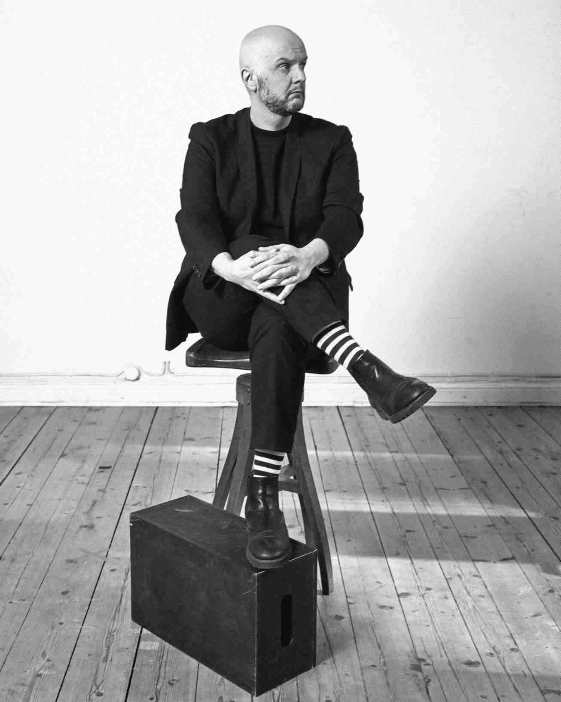
“Olemme astuneet tekoälyttömyyden aikaan. Se on aikakausi, joka tarjoaa meille kaksi polkua: joko tulemme älykkäiden koneiden tyhmiksi käyttäjiksi tai opimme käyttämään niitä viisaasti oman ajattelumme rikastuttamiseen.”Jarno Alastalo
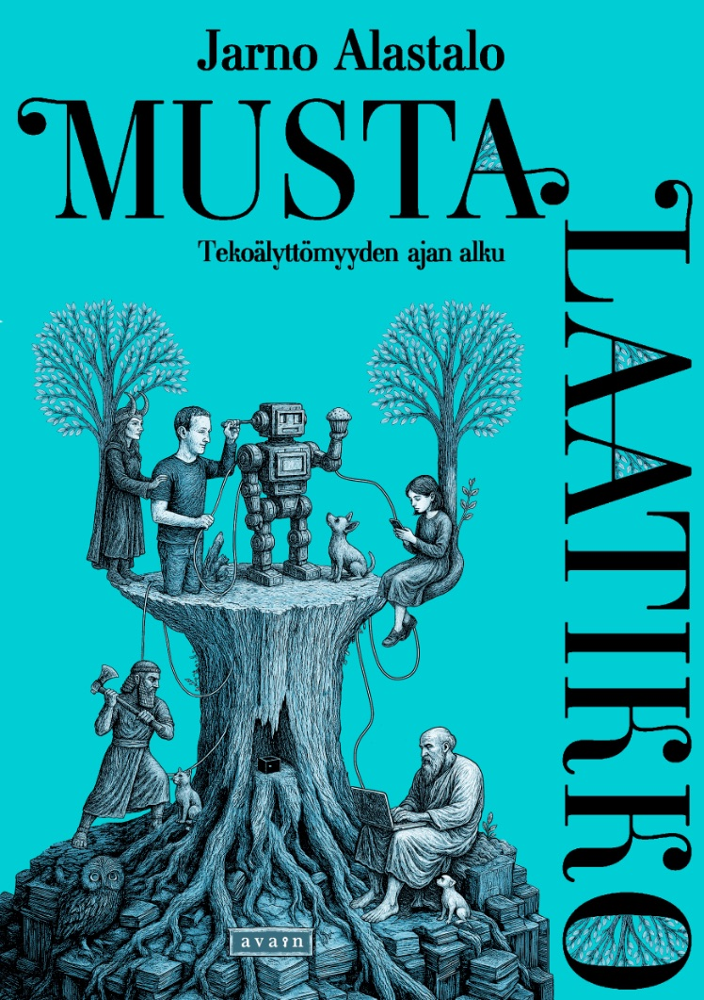
Uusi kirja on ilmestynyt
Musta laatikko
Tekoälyttömyyden ajan alku
Musta laatikko on tutkimusmatka maailmaan, jossa algoritmit, tekoäly ja näkymättömät järjestelmät muokkaavat tunteitamme, valintojamme ja yhteisöjämme.
Olemme astuneet tekoälyttömyyden aikaan: joko tulemme älykkäiden koneiden tyhmiksi käyttäjiksi tai opimme käyttämään niitä viisaasti. Tekoäly toimii mustassa laatikossa, järjestelmässä, jonka toimintaa emme näe, mutta jonka vaikutukset tunnemme. Mitä tapahtuu, kun tekoälystä tulee opettaja, ystävä ja peili?
Jos tekoäly valitsisi viisaasti, antaisitko sen päättää elämästäsi? Tai kuolemastasi? Tämä kirja kutsuu sinut katsomaan pinnan alle.
Kirja kustantajan kaupassa. Ja voit kysyä suoraankin: jarno@csy.fi
Tositarinoita kirjahyllyyn
Jarno Alastalon teokset käsittelevät yhteiskunnan ilmiöitä tekoälyn, sosiaalisen median, erikoisten ihmiskohtaloiden ja internetin varjopuolien kautta.
Musta laatikko
2026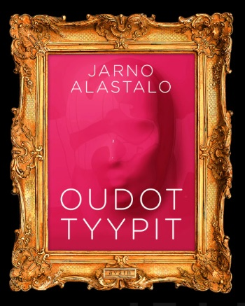
Oudot tyypit
2020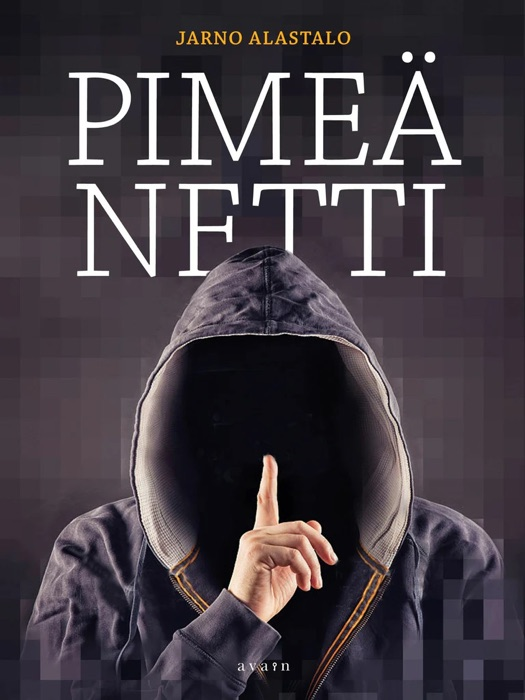
Pimeä netti
2017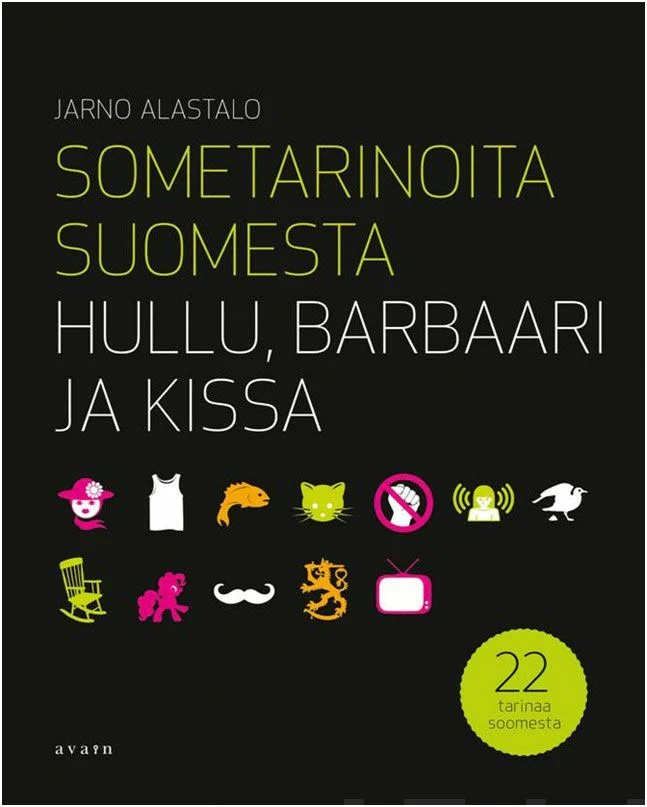
Sometarinoita Suomesta
2015Kirjat myynnissä myös suoraan minulta – laita viestiä jarno@csy.fi
Lataa ilmainen teos
80 näkökulmaa tekoälyyn – Opas nuorten parissa toimiville
Teos avaa tekoälyn maailmaa nuorten parissa työskenteleville. Se tarjoaa näkökulmia tekoälyn vastuulliseen käyttöön ja auttaa ymmärtämään, miten tukea nuorten kriittistä ajattelua teknologian aikakaudella. Kirja perustuu yli 30 asiantuntijan ja nuoren haastatteluihin, ja se keskittyy erityisesti niihin elementteihin, joita tekoäly ei voi korvata: aitoon empatiaan, haavoittuvuuden ymmärtämiseen ja kulttuuriseen lukutaitoon.
Lataa opas (PDF)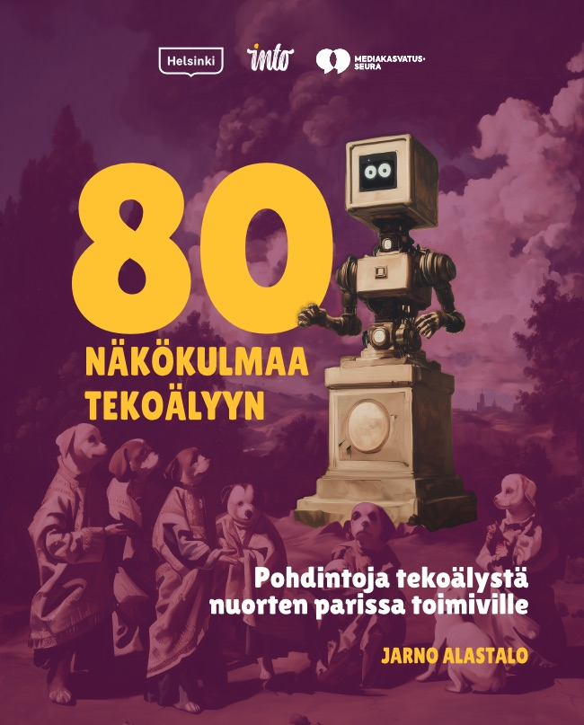
Kuka on Jarno Alastalo?
Kun Suomi24:ssä oli yli miljoona käyttäjää, Jarno Alastalo näki läheltä, miten ihmiset käyttäytyvät, kun ruudun takana on vain nimimerkki.
Hän on tekno-filosofi, kirjailija, digitaalisten yhteisöjen rakentaja ja kissavideoiden asiantuntija, joka on suunnitellut mustia laatikoita. Hän tarkastelee teknologiaa inhimillisestä näkökulmasta: miten tekoäly, sosiaalinen media ja algoritmit muokkaavat ihmisyyttä, identiteettiä ja arvoja.
Taustalla on pitkä työ journalistina. Jarno oli perustamassa Suomi24-yhteisöä, johti Aller Median verkkoliiketoimintaa ja rakensi Heimo-yhteisöpalvelun, jossa introvertitkin uskalsivat avautua. Nyt hänen yrityksensä MPH Making People Happy tekee digitaalisten palveluiden ja sosiaalisen median alustojen konsepteja ja sisältöjä, ja ajatustyöpaja CSY Lab tutkii algoritmien, tekoälyn ja ihmisyyden rajapintaa.
Uusin kirja on Musta laatikko – Tekoälyttömyyden ajan alku (2026). Sitä ennen ilmestyivät tositarinakirjat Oudot tyypit (2020), Pimeä netti (2017) ja Sometarinoita Suomesta (2015).
Luentoja ovat kuulleet muun muassa media-alan päättäjät, ministeriöt, isojen yritysten henkilöstö, nuorisotyöntekijät, opettajat, opiskelijat, sosiaali- ja terveysalan ammattilaiset ja kuntien asukkaat.
Esityksissä ei selitetä koodia. Niissä kysytään, mitä meille tapahtuu, kun kone alkaa ajatella puolestamme.
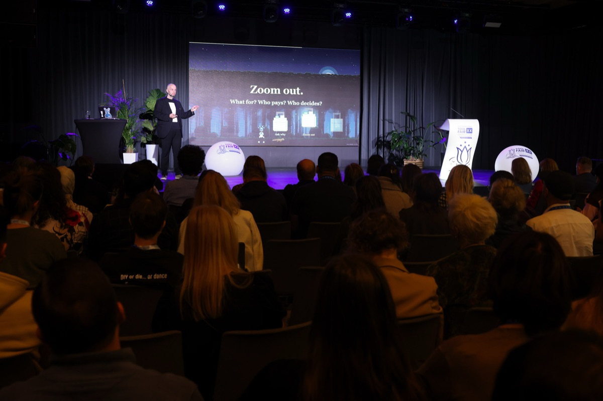
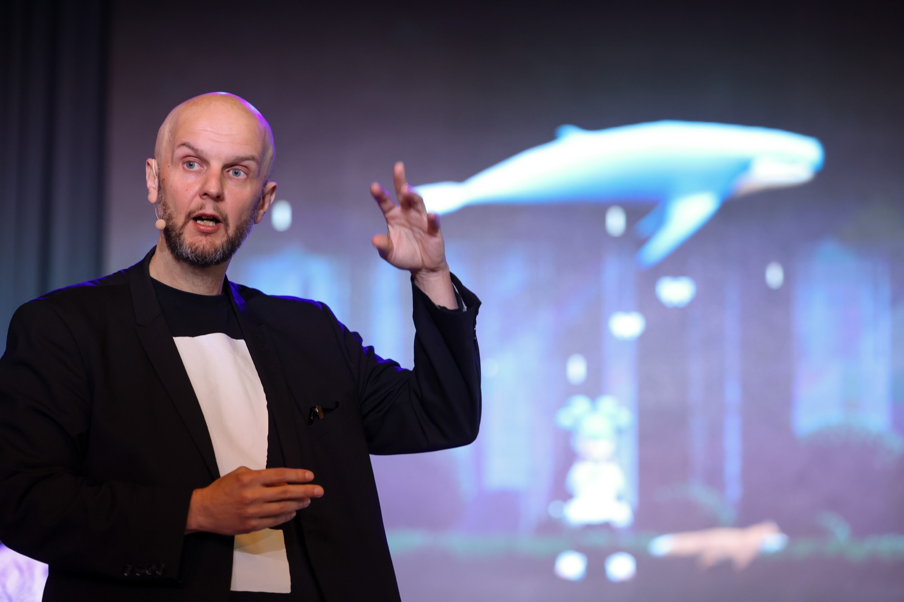
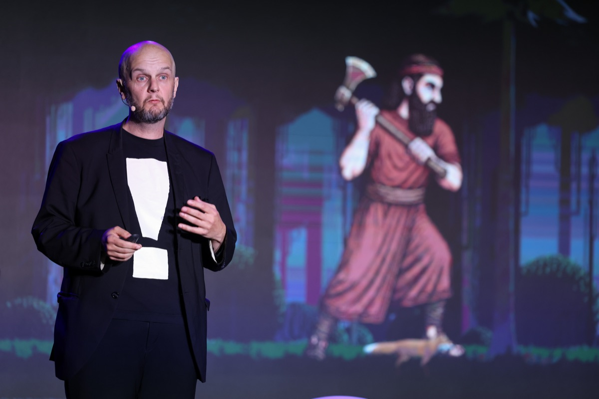
Puhujana
Maailman vanhin kirjoitettu tarina alkaa kuninkaasta, joka kaataa metsän oman nimensä vuoksi. Häntä varoitetaan, ja hän päättää yksin. Nyt metsää kaadetaan datakeskusten tieltä. Jarnon esityksissä tekoäly ei ole taikuutta eikä tuomiopäivä. Se on päätöksiä, joita joku tekee, ja kysymys on, kuka ne tekee. Mihin? on liian tärkeä kysymys jätettäväksi kuninkaille.
Jarnon esitykset ovat visuaalisia ja pelimäisiä, ja ne rakentuvat tarinoista. Niissä on tutkimusta ja oikeita ihmisiä, ja joskus valkokankaalla puhuu Jarno, joka ei ole Jarno. Hän on puhunut Suomen suurimpien yritysten henkilöstölle, ministeriöille, lukiolaisille ja Mikkelin vankilassa.
Kuulijoina Suomen suurimmat yritykset · kirjastot ja kirjamessut · yläkoulut ja lukiot · ammattikorkeakoulut ja opistot · järjestöt · taiteilijat · vankila · kansainväliset keynotet englanniksi
Älyttömiä tekoja vai tekoälyä?
Tekoäly ei ole taikuutta – mutta se saa meidät uskomaan siihen. Esityksessä paljastetaan, mitä tekoäly todella on, mitä se ei ole – ja miksi se silti onnistuu ohjaamaan tunteitamme, ajatuksiamme ja päätöksiämme.
Algoritmien musta laatikko
Mitä tapahtuu, kun päätöksiä tekevät järjestelmät, joiden logiikkaa emme näe emmekä ymmärrä? Tämä teema pohjautuu Musta laatikko -kirjaan (2026) ja vie kuulijat syvälle algoritmien näkymättömiin mekanismeihin: miten ne muokkaavat arkea, kulttuuria ja yhteiskuntaa – ja kuka niistä hyötyy.
Tekoäly ja identiteetti
Kun kone toimii peilinä, se ei heijasta takaisin totuutta vaan valikoituja, vinoutuneita versioita meistä. Mitä tämä tarkoittaa identiteetin rakentumiselle, yhteiskunnalliselle keskustelulle ja käsityksellemme todellisuudesta?
Nuoret ja tekoäly
Nuorten maailma on ensimmäinen, jossa tekoäly on arkea syntymästä lähtien. Algoritmit suosittelevat sisältöjä, ehdottavat sanoja ja vaikuttavat siihen, kuka näkyy kenelle. Käytännön esimerkkien ja nuorten omien kokemusten kautta puretaan myyttejä ja pohditaan, millaista lukutaitoa tekoälyajan nuori tarvitsee.
Digitaaliset oligarkit ja vallan keskittyminen
Muutaman teknologiayrityksen käsissä oleva valta määrittää, mitä näemme ja tunnemme. Miten tämä muuttaa demokratiaa, arvoja ja tulevaisuutta? Entä mitä vaihtoehtoja meillä on rakentaa toisenlaista digitaalista kulttuuria?
Tekoäly, etiikka ja inhimillisyys
Koneet tekevät virheitä, mutta eivät ymmärrä niitä. Ne ruokkivat meitä kognitiivisella sokerilla ja oppivat heikkoutemme ennen kuin tunnistamme ne itse. Millaisia eettisiä kysymyksiä tämä herättää kasvatuksessa, päätöksenteossa ja jokapäiväisessä elämässä?
Digitaaliset identiteetit, yksinäisyys ja yhteisöt
Miten verkossa luodut identiteetit kohtaavat todellisen elämän? Miksi some ei poista yksinäisyyttä – ja miten digiyhteisöt voisivat tukea meitä autenttisesti?
Mitä kehote maksaa?
Paljonko tekoäly käyttää vettä? Kukaan ei tiedä tarkasti, ja luvut saavat nuoret tuntemaan syyllisyyttä, kuin ongelma olisi heidän omassa käytössään. Isot päätökset tehdään muualla. Esitys antaa nuorten kanssa työskenteleville kolme työkalua: kysy, miksi nuori kysyy. Katso kokonaisuutta: mihin tätä käytetään, kuka maksaa ja kuka päättää. Ja pyydä toista tapaa niiltä, jotka päättävät. Kun otsonikerros oli vaarassa, maailma ei luopunut jääkaapeista. Se vaihtoi kaasun, yhdessä.
Nuorten parissa toimivat
Erikoisuuteni on puhua kasvattajille, nuorisotyöntekijöille ja opettajille siitä, miten tekoäly ja algoritmit muokkaavat nuorten arkea, identiteettiä ja toimijuutta. Esityksissäni yhdistyvät tutkimus, nuorten omat näkemykset ja käytännön esimerkit, jotka antavat välineitä ymmärtää koneiden logiikkaa sekä tukea nuorten kriittistä ajattelua tekoälyaikana.
Olen tehnyt lähes kymmenen vuoden ajan yhteistyötä muun muassa digitaalisen nuorisotyön osaamiskeskus Verken sekä useiden muiden organisaatioiden kanssa ulkoisena asiantuntijana ja tuottajana erilaisissa projekteissa, koulutuksissa ja sisällöntuotannoissa. Tämä kokemus on vahvistanut näkökulmaani siitä, miten tekoäly ja digitaalinen kulttuuri vaikuttavat nuorten maailmaan – ja miten ammattilaiset voivat vastata muutokseen.
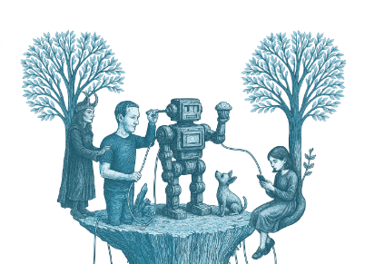
Tulossa
- 19.–22.10.2026 Keynote / TF Talk: What does a prompt cost? – AI, the environment and the question we ask young people – 20th International Tool Fair: Green Futures, Sopot, Puola
- 24.10.2026 Kirjailijaesiintyminen – Helsingin Kirjamessut (Kruununhaka-lava)
- 29.10.2026 Kouluvierailu ja luento – Tulliportin normaalikoulun lukio, Joensuu
- 5.11.2026 Kirjailijavierailu ja luento – Lappeenrannan pääkirjasto
- 11.11.2026 Asiantuntijapuheenvuoro: Tekoälyttömyyden aika, kasvattaja algoritmin ja lapsen välissä – Lastenkulttuurifoorumi / Luova luokka -päivä, Pohjankartano, Oulu
- 1.12.2026 Kirjailijavierailu ja luento – Taivassalon kirjasto
- 3.12.2026 Puheenvuoro: Digitaalinen osallisuus ja virtuaaliyhteisöt – Päätöswebinaari (Verkossa)
- 9.12.2026 Asiantuntijapuheenvuoro: Tekoälytaidot nuorisotyön käytänteisiin -lopputapahtuma (Verkossa)
Esiintymisiä 2026
- 12.10.2026 Luento ja kirjailijavierailu – Mikkelin vankila
- 9.10.2026 Kirjailijavierailu ja luento – Kuoreveden koulu, Jämsä
- 6.10.2026 Kirjailijavierailu ja luento – Hämeenlinnan kaupunginkirjasto
- 4.10.2026 Kirjailijaesiintyminen – Turun Kirjamessut
- 8.9.2026 Luento ja keskustelu: Tekoäly taiteilijan silmin – Kuvataidejärjestöjen verkoston syksyn 2026 koulutusohjelma visuaalisen alan taiteilijoille, Helsinki
- 21.5.2026 Virtuaalinen kirjailijavierailu ja luento, Jyväskylä
- 7.5.2026 Koulutus ja työpaja: Tekoälyn hyödyntäminen viestinnässä, Helsinki
- 6.5.2026 Asiantuntija-alustus: Tekoäly käytännön työn tukena (Verkossa)
- 25.4.2026 Esiintyminen, kirjailijavierailu ja luento – Porvoon kirjafestarit
- 22.4.2026 Puheenvuoro: Saavutettava tekoäly ja tulevaisuuden taidot – Järjestöalan teemapäivä, Helsinki
- 18.4.2026 Kirjailijahaastattelu ja esiintyminen – Metson messut, Tampereen pääkirjasto Metso
- 15.4.2026 Asiantuntijapuheenvuoro: Mitä tekoäly tekee ajattelulle ja lukutaidolle? – Kirjastoalan AI-kahvit (Verkossa)
- 30.3.2026 Keynote: European Solidarity Corps Digital Transformation (Verkossa)
- 19.3.2026 Luento – Suomen Diakoniaopisto, Helsinki
- 10.3.2026 Asiantuntijaluento – Kaakkois-Suomen ammattikorkeakoulu (Xamk), Kotka
- 17.2.2026 Kirjailijavierailu, luento ja kirjanjulkistus – Keskustakirjasto Oodi, Helsinki
Aiemmin
- Lapin sosiaali- ja terveysturvan syyspäivät, Luosto, 2025
- Miksi luottaa tekoälyyn, jos se ei erota koiraa muffinssista? Nuori25-päivät, Tampere-talo, 2025
- Tekoäly – älyttömiä tekoja vai älyä mielenterveyden tukemiseen, Rovaniemi, 2024
- Twin transition in the Youth field: Will Digital Technology harm or help our planet?, SALTO Digital Dialogues, Europe, 2024
- Tekeekö sosiaalinen media nuorista onnettomia tai onnellisia?, Espoonlahden seurakunta, 2024
- Digitalisaation vaikutus ilmastonmuutokseen, Kirkon kasvatuksen päivät, Jyväskylä, 2024
- Digitalisaatiosta nuorisotyön etsiville, Häme & Uusimaa, 2024
- Miten digiyhteisöjen luomat todellisuudet muovaavat ajatuksiamme, Lapinlahden lukio, 2023
- Will tech save or destroy our planet – Youth work perspective, Digital Youth Work – State of Play, Dublin, 2023
Esityksistä saatua palautetta
Olen kiertänyt kirjastoissa, kouluissa ja asiantuntijatapahtumissa puhumassa siitä, missä teknologia, tekoäly ja ihminen kohtaavat. Palaute on ollut 5/5. Mustan laatikon teemat ovat tuntuneet yleisöstä ajankohtaisilta, koska ne eivät ole tulossa. Ne ovat jo täällä.
Jämsässä kuudesluokkalainen tyttö kysyi minulta, paljonko tekoäly käyttää vettä. Sitä kysymystä ei ollut esityksessäni. Vastasin, että noin puoli litraa viittäkymmentä kysymystä kohden, ja sanoin, etten tiedä, pitääkö se paikkansa. Kukaan ei tiedä. Hän sanoi kiitos. Olen miettinyt siitä asti, mitä minun olisi pitänyt vastata, ja siitä tuli puheeni kansainväliseen Tool Fairiin. Siksi jätän jokaiseen tilaisuuteen tilaa kysymyksille. Parhaat niistä eivät ole esityksessä valmiina.
“Aivan kuin TED-talk!”
“Loistava puhuja!”
“Jarnon setti oli sopivan mittainen, innostava ja hiukan yllättäväkin.”
“Loistava setti! Näitä lisää! Niin asiaa, mitä olen kaivannut. Mahtavaa, kiitos!”
“Hyvin visuaalinen esitys ja mielenkiintoinen asiakokonaisuus.”
“Esityksessä oli uutta tietoa nuorten digikäyttäytymisestä.”
“Olit huippu, puhuit digitaalisuudesta ja tulevaisuudesta ymmärrettävästi ja innostuneesti.”
“Olit erittäin inspiroiva esiintyjä!”
Tilaa luento tai vierailu
Jokainen meistä käyttää tekoälyä, vaikka ei olisi koskaan avannut ChatGPT:tä. Se valitsee, mitä uutisia näet, mitä kirjaa sinulle suositellaan ja kenet näet ensimmäisenä aamulla puhelimen ruudulla. Tunnin luento ei muuta sitä. Mutta sen jälkeen kuulija osaa kysyä: ”Onkohan tässä koko kuva?”
Suoraan minulta
Luennot, keynotet, koulutukset ja työpajat. Haluatko tilata luennon, kysyä lisätietoja tai keskustella yhteistyöstä? Laita viesti – vastaan mielelläni.
jarno@csy.fiLukukeskuksen kirjailijavierailupalvelu
Eri tahot, erityisesti koulut ja kirjastot, tilaavat Lukukeskuksen palvelun kautta kirjallisuuden ammattilaisia esiintymään.
Kirjailijavierailut · Asiantuntijaluennot · Työpajat · Virtuaalivierailut · Juhlapuheet
Aikuisille, lukioon ja ammattikouluun sekä yläkouluun.
Minut voi tilata myös puhujatoimistojen kautta: Verbal ja Speakers Forum.
Mediamainintoja
-
MTV3 – Viiden jälkeen
Mihin hyvään tekoäly sopii
Olemme astuneet tekoälyttömyyden aikaan. Kysymys on: onko se negatiivista tekoälyttömyyttä, jossa luovutamme ajattelumme koneille, vai positiivista, jossa tekoäly antaa meille enemmän aikaa ihmisen kohtaamiseen?
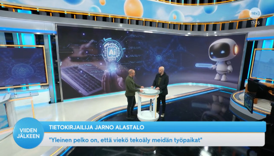
-
Kaleva
Kotimainen tietokirja kertoo, mitä tapahtuu, kun ihminen ulkoistaa ajattelunsa tekoälylle
Teoksen suurin vahvuus on sen yleistajuisessa ja käytännönläheisessä lähestymistavassa. Termien merkityksiä avataan ymmärrettävästi. Tekoälyyn liittyvät mahdollisuudet ja uhat on tuotu esiin arkisissa yhteyksissään, ilman kovin korkealentoisia skenaarioita.
-
Kirkko ja kaupunki
Maailma kännykässä – Jarno Alastalo tuntee verkon valot ja varjot
Jarno Alastalolla on pitkä kokemus digimaailmasta. Hän haluaa olla hyvien asioiden lähettiläs ja välittää eteenpäin verkon käytön positiivista puolta.
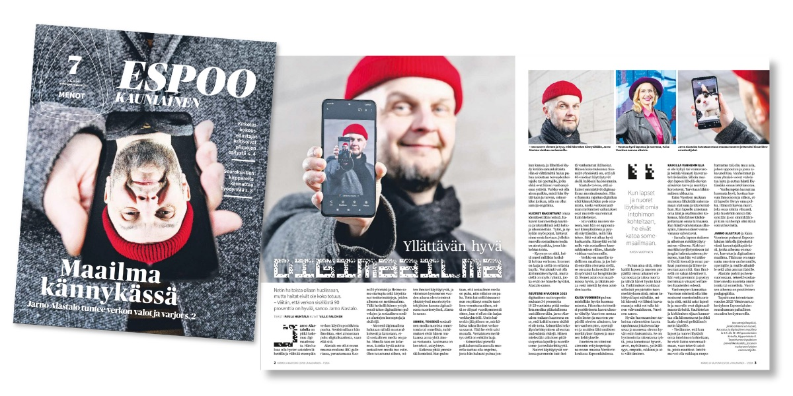
-
Matti ja Liisa, Lapinlahden paikallislehti
Some on monen nuoren ainoa turvapaikka
Verkkoyhteisöasiantuntija Jarno Alastalo ei olisi huolissaan nuorten somenkäytöstä. Netinkäytössä kannattaa kuitenkin pitää kriittisyys mukana – aikuistenkin.
-
Yle Radio Suomi
Miten elää välittämättä siitä, mitä muut ajattelevat minusta?
Markus Turusen juttukaverina kirjailija, sosiaalinen introvertti, digitaalisten yhteisöjen ja kissavideoiden asiantuntija Jarno Alastalo.
-
MTV Uutiset
Vastaamon potilastietoja on julkaistu internetin salatussa Tor-verkossa
Jarno kertoi tor-verkosta ja pimeän netin valoisista ja mustista puolista MTV:n Kymmenen uutisissa.
-
Iisalmen Sanomat
Kännykkäriippuvuus on usein ihmisikävää. Ihmisellä on digiaikanakin tarve kuulua ryhmään.
“Ihmisen supervoiman eli empatiakyvyn merkitys tulee korostumaan. Toisin kuin aidot ihmiset, robotit eivät ainakaan vielä osaa asettua toisen saappaisiin.”
-
Helsingin Sanomat
Tunteet täytyy saada purkaa, tietää verkkokeskustelun pioneeri Jarno Alastalo
“Nyt hän kehittää uutta palvelua, jossa introvertitkin uskaltavat avautua. Yhteisöllinen Heimo-palvelu on suosittu Japanissa ja Suomessa, jossa häpeä ja puhumattomuus on yleistä.”
-
Yle
Ylen aamu-tv: Verkon pimeä puoli
Mitä tapahtuu netin pimeällä puolella? Dark webissä ja Tor-verkossa on muutakin kuin rikollisuutta, kertovat pimeästä verkosta kirjoittanut Jarno Alastalo ja verkkorikoksista kirjan kirjoittanut Ari Haasio.
-
Yle Radio Suomi
Juuso Pekkinen: Salaisuus verkossa
Tällä hetkellä Alastalo vetää Heimo-yhteisöpalvelua joka pyrkii parantamaan mielenterveyttä. Alastalo on myös kirjailija jonka uusin teos käsittelee sitä mikä verkossa tapahtuu salassa. ”Pimeä netti” antaa äänen mm. hakkereille, laittomien aineiden kauppiaille ja ostajille sekä heille jotka eivät voi kohdata toisiaan ”kirkkaassa päivänvalossa”. Juuso Pekkinen keskustelee Jarno Alastalon kanssa kirjasta, eräästä oikeusjutusta sekä siitä mikä tekee verkkoyhteisön.
-
Pauli Juusela / Kirkko ja kaupunki
Pimeä netti suojaa rikollisia, mutta antaa myös väyliä vapauteen
“Jarno Alastalon Pimeä netti kertoo ihmisten tarinoita netin pimeyden suojista. Osa niistä liittyy pimeään nettiin, osa on outoja, osa tuo valoa pimeyteen.”
-
Radio Rock
Jarno ja Oudot tyypit Korporaation aamussa
Haastattelussa Jarno Alastalon kanssa keskusteltiin ihmetellyistä ihmisistä, joista hän on kirjoittanut kirjan Oudot tyypit.